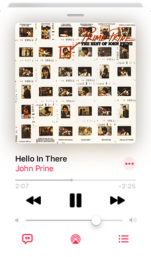
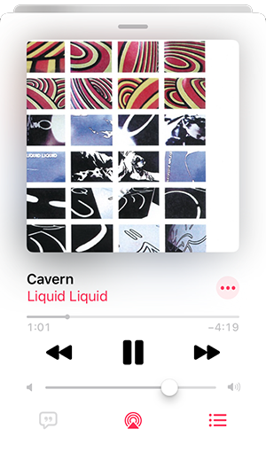
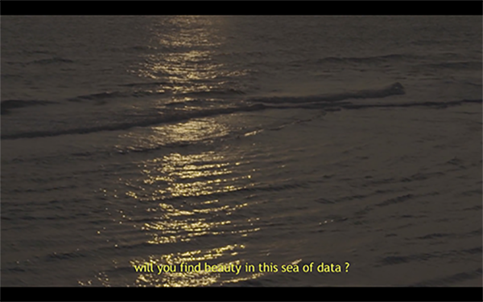
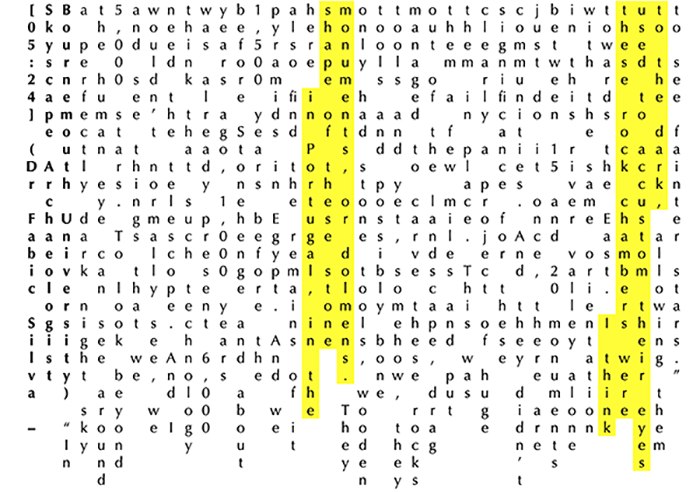

Blog 2020 best viewed on desktop

The pleasure principle portrait of Edward James (1937) - René Magritte
Doctor Zhivago - Boris Pasternak
Page 123
“Meanwhile it was quickly getting dark. The streets contracted. Houses and fences huddled together in the evening darkness. From the depths of the courtyards, trees came up to the windows, to the light of the burning lamps. It was a hot sultry night. Every movement made one break into sweat. Strips of kerosene light, falling into the yard, ran down the tree trunks in streams of dirty perspiration.”
Page 128-129
“Stars and trees come together and converse, night flowers philosophise, and stone buildings hold meetings."
Dan Fox – Limbo
Chapter 24
“Grey water faded into pure, white, low cloud like the edge of a drawing in which the picture simply gives way to blank paper.”
Ocean Vertigo
“There is a fifth dimension beyond that which is known to man ... a dimension as vast as space and as timeless as infinity. It is the middle ground between light and shadow, between science and superstition, and it lies between the pit of man's fears and the summit of his knowledge. This is the dimension of imagination.” ― Rod Serling
Dan Fox – Limbo
Chapter 1 - [06:25]
“I thought of another untitled sculpture I’d seen by an artist who’s curious why images and objects lose our attention the longer we spend with them. In 2017 Simon Martin made a bronze figurine that he only considered activated if a fresh organic lemon was placed next to it. If there was no lemon or if the citrus had rotted, Martin ruled the artwork incomplete. The act of replacing the fruit every week or two was analogous to watering the plants, a reminder to not let the familiar turn invisible, neglected.”
Chapter 3 - [03:10]
"The disconsolate mind finds comfort in odd shaped corners."
Source:https://soundcloud.com/danfoxx/sets/dan-fox-limbo/p>
Source: https://www.geograph.org.uk/photo/5755518
John Prine - Hello In there
Ya' know that old trees just grow stronger
And old rivers grow wilder ev'ry day
Old people just grow lonesome
Waiting for someone to say, "Hello in there, hello"
Doctor Zhivago - Boris Pasternak
Page 6
“Yura thought he remembered the way, and each time the fields spread out wide, with woods embracing them in front and behind in a narrow border, it seemed to Yura that he recognised the place where the road should turn right, and at the turn there would appear and after a moment vanish the seven-mile panorama of Kologrivovo, with the river glistening in the distance and the railroad running beyond it. But he kept being mistaken. Fields were succeeded by fields. Again and again they were embraced by woods. The succession of these open spaces tuned you to a vast scale. You wanted to dream and think about the future.”
 
Rose Finn-Kelcey The Restless Image: a discrepancy between the felt position and the seen position [1975]

Source: https://www.tate.org.uk/art/artworks/finn-kelcey-the-restless-image-a-discrepancy-between-the-felt-position-and-the-seen-p78607
Carey Young Body Techniques (after Parallel Stress, Dennis Oppenheim,1970) [2007]
 2007.jpg)
Source: https://www.tate.org.uk/art/artworks/young-body-techniques-after-parallel-stress-dennis-oppenheim-1970-p79819
Dennis Oppenheim Parallel Stress [1970]

Source: https://www.tate.org.uk/art/artworks/oppenheim-parallel-stress-t12403
I would pretend (metaphorically) to have seen nature and universe themselves not as a picture made or fastened on an immovable wall, but as a sort of painted canvas roof or curtain in the air, incessantly pulled and blown and flapped by a something of an immaterial unknown and unknowable wind.
- Boris Pasternak
Letter (in English) to Stephen Spender, 22 August 1959
Yellow is Forbidden
[00:33]
“Pass me your phone. Shine it on the skirt. Then let it gradually absorb more light. Light is its nutrient. More light. Turn off your cellphone light, darling. See how it glows? It’s beautiful, right?”
Source: https://www.bbc.co.uk/iplayer/episode/m000h3dv/yellow-is-forbidden
Korakrit Arunanondchai with history in a room filled with people with funny names 4 (2017)
[03:37]
[19:32]
[19:41]
Source: http://www.carlosishikawa.com/

Secrets of the Super Elements
[04:07]
“Your average smartphone contains over half the elements on the planet. There’s lithium and cobalt in the battery, lanthanum and yttrium in the screen. Terbium and dysprosium make the microphone. There’s even arsenic in the silicon chip.”
[06:28]
“… we have a soft metal (indium) that can turn into a liquid that conducts electricity. Not bad. But it has one more astonishing property. The thing that makes it an absolutely vital part of every smartphone. Mix it with tin and oxygen, and you get indium tin oxide, a transparent electrical conductor. And that’s how you make the touch-screen.”
[49:52]
“… your phone knows which way up it is, doesn’t it? That seems really simple but actually, there’s a tiny machine inside the phone working that out. It’s called an accelerometer, and it’s got moving parts that are smaller than the hair of a flea. And it detects the force of gravity.”
Source: https://www.bbc.co.uk/programmes/b08rv9r6
Wile E Coyote and Road Runner - Stop! Look! and Hasten! - [02:10;02:12]
Wile E Coyote and Road Runner - Zipping Along - [01:02]


Tom and Jerry - The Invisible Mous - [04:46;04:57;04:58]

Tom and Jerry - Hatch Up Your Troubles - [03:37]


Tom and Jerry - Flirty Bird - [02:44;02:45;02:46]
Glow in the dark eyes
Wile E Coyote and Road Runner - Beep,Beep - [04:15]

Tom and Jerry - Dr Jekyll and Mr Mouse - [01:51]


Can Science Make Me Perfect? With Alice Roberts
[65:34] (Alice Roberts)
“…by changing the design of our eyes, we could achieve this (seeing in low light levels) with visible light. It’s simple a matter of scale. As they evolve to live or hunt in semi-darkness, nocturnal animals often have noticeably larger eyes. Their enlarged pupils allow more light to hit the retina, increasing visual sensitivity.”
[66:05]
“I’ve been looking at eyes and I think our eyeballs could be better, so they could let more light in and we could trap more light, as well. And I think the eyeballs need to be about 20-25% larger than they are at the moment.”
[66:16] (Scott Eaton)
“You know, I think that’s just big enough that they will look really interesting. There’s no doubt about it. You’re going to have big old cartoon eyes.”
Source: https://www.bbc.co.uk/iplayer/episode/b0b6q3qy/can-science-make-me-perfect-with-alice-roberts
Revolutions: The Ideas that Changes the World series 1: 5. The Telescope
[05:24] (Dr Fabic Silva – Skyscape Archaeologist Bournemouth University) “In a perfectly dark night sky the human eye can see around 5,000 stars. To look beyond and see things that we wouldn’t normally see, we need the telescope. And I think that such technology was already present 6,000 years ago, 1,000 years before Stonehenge and about 1,500 years before the pyramids in Egypt. And we also find the remains of it here in Portugal, in the shape of these stone monuments, or dolmens. They only had stone tools, wooden tools and possibly bone tools and yet, somehow, they managed to carve these rocks out of the landscape, drag them a few miles and put them in place. This was clearly a project of huge significance for these communities. And they didn’t just do it once, there are between 15 and 20 monuments in this river valley alone with the same orientation towards the East. I think these rock chambers were used to accustom their eyes to the dark, allowing them to see fainter stars.”
Source: https://www.bbc.co.uk/programmes/m0007tpj
Einstein’s Quantum Riddle
Source: https://www.bbc.co.uk/programmes/m000db95
Source: https://www.w3schools.com/js/tryit.asp?filename=tryjs_intro_show

Peter Rice: An Engineer Imagines (BBC)
The Full Moon Theatre – Humbert Camerlo and Peter Rice
[10:02] (Andy Sedgwick – Director Arup)
“Peter was keen to use some sort of structural shape to try and collect moonlight.
A paraboloid has the character that, if you point it at a source a long way away,
it will focus all the rays on to one point.”
[19:55] (Kevin Barry)
“Because Ove Arup is, to him, somebody who has confidently built up a company founded on a set of principles of the social purpose of engineering. So that modernity isn’t simply for its own sake, making it new. But it’s related to some kind of reflection. It says man has won that battle with nature. And now, we have to live with the consequences of managing this conquered territory.”
[29:25] (Peter Rice)
“And I thought that if somehow, by introducing elements like that, we can make people, people who would normally be alienated by things, feel comfortable… it proved to me that the things that really matter is to introduce elements and materials into buildings in a way which reflects their real nature.”
[30:10] (Kevin Berry)
“Rice was somebody who didn’t want institutions to weigh on people. The building is a performance.
And the people who are in the building are seeing that performance from their different perspectives.
And the building ought to be as alive as something that is happening. And in that way, I think his humanism is to make people part of the play, spectators and actors at once. Building, for Rice, is a performance art.”
[31:43] (Humbert Camerlo)
“For Peter, I think the two things which interested him to start with was, of course,
to work with light, with natural light . But also, to be involved in cross discipline, artist and scientist and scientific environments. The organic development of a project. The important thing is not to be prisoner of the idea you wanted to reach. You have to resist to the attraction of the goal. The attraction of the target. And you have to work and work, and then it’s not the arrow that goes into the target, it’s the target that comes to the arrow. As the Taoist philosopher says,
“ Nothingness is the meeting place of the noble traveller.””
[35:32] (Sophie Le Bouvra – Associate Director Arup)
“He liked having discussions about design. And not necessarily draw it too early, that was certainly one of the things he taught me is don’t draw things too early, because it stops the thinking. Whereas, if you’re only talking about it, there is a room where different people may have slightly different ideas. But it leaves those ideas alive, whereas if you’ve drawn it, it sort of freezes the sort of ideas.”
[40:14] (Martin Francis – designer)
“And one of the early meetings I have with Peter, I said one of the things engineers don’t understand is that glass is a flexible material. And this was when Peter had this sort of eureka moment in which her said, if that’s the case, then we don’t need a rigid structure. Hitherto, everything was, you know, glass has got to be in a rigid frame, to stop it breaking. And he had this moment of insight.”
[56:02] (Humbert Camerlo)
“We would say in French, une demeure spirituelle. Demeure is more than home. Sculpture can be une demeure for the psyche. You know? A painting can be une demeure. A masterpiece is a psychic house for people. So, Peter, he found a place where he could rest.”
Source: https://www.bbc.co.uk/programmes/m0007zg7
Einstein’s Quantum Riddle
[55:47] In a radical theory, known as the holographic universe, space and time are created by entangled quantum particles on a sphere that is infinitely far away.
Source: https://www.w3schools.com/js/js_intro.asp
Source: https://www.bbc.co.uk/programmes/m000db95
The grid-auto-flow Property
The grid-auto-flow property controls how auto-placed items are inserted in the grid.
This grid has three columns and two rows.
grid-auto-flow: column
Insert items column by column:
grid-auto-flow: row
Insert items row by row:
Source: https://www.w3schools.com/cssref/pr_grid-auto-flow.asp
Source: https://www.bbc.co.uk/programmes/b03w7b7x
Chasing the Moon series 1: 6. Magnificent Desolation
[09:31] (Theo Kameke – NASA Filmmaker)
and demonstrated different ways of moving around.
There was the being in the suit, and the lightness of the gravity.
What can I do? Well, I’ve got to hop like this. I got a big backpack, and you have to acknowledge that you are carrying that when you make a turn. It really wasn’t what you’d call a challenge, other than to look nonchalant in front of people.”
Source: https://www.w3schools.com/cssref/css3_pr_perspective-origin.asp
Source: https://www.bbc.co.uk/programmes/m0006vrn
Chasing the Moon series 1: 6. Magnificent Desolation
[09:31] (Theo Kameke – NASA Filmmaker) “There was a video camera that was recording them coming down the ladder, and then there was another portable camera, which they took and moved out away from the lunar module. And that was the only vision that humans around the world had of what was happening on the moon. (…) There’s a ghostly quality about it, because you can see through people. Well, that’s a very clever way that they had of limiting the amount of signal that they had to broadcast. You couldn’t transmit high-definition television from the equipment that they had on the moon. It couldn’t be done, so you’re going to have to pare down your expectations of the quality of the image that you’re going to see.”
Source: https://www.bbc.co.uk/programmes/m0006vrn
The resize Property
Source: https://www.w3schools.com/css/css3_user_interface.asp
The transition Property
Hover over the green object above, to see the transition effect.
The writing-mode Property
Some text with default writing-mode.
Some text with a span element with a vertical-rl writing-mode.
Some text with writing-mode: vertical-rl.
Movement
Click and hold the mouse button down while moving the green square.
https://www.w3schools.com/howto/howto_js_draggable.asp
Drag and drop Charac between the two boxes.
https://www.w3schools.com/html/html5_draganddrop.asp

Things to Plan
Things I'm thinking about:
- making a documentary --- using people I know to read out the quotes that I've noted
- Understanding how digital videos play how they buffer and load etc
- still interested in light and reflections